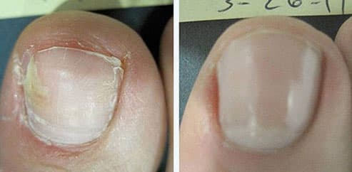

GESUNDHEIT
Fuß- und Nagelpilz Welche Gefahren verbergen sich hinter dieser Krankheit und wie kann man sie loswerden?
Herausgeber: Lt. Statistik leidet fast ein Fünftel der Menschheit an Pilzkrankheiten an Füßen und Nägeln. Die Ursachen dafür sind unterschiedlich - von geschwächtem Immunsystem bis zu nicht passenden Schuhen.
Heute wird Ihnen Expert für Hautprobleme Dr. Alexander Eduard (Deutschland)erläutern, wie moderne Errungenschaften in der Medizin es möglich machen, eine so gefährliche und unangenehme Krankheit wie Fuß- und Nagelpilz in einem Monat von zu Hause aus loszuwerden.
Alexander Eduard: Wir beginnen unsere Diskussion heute mit der Tatsache, dass es viele Menschen gibt, die Pilze an Füßen und Nägeln nur als ästhetischen Defekt betrachten und sie für gesundheitlich harmlos halten. Aber stimmt das? Sehen wir genauer hin!
 Alexander Eduard mit dem Programm "Heile dich selbst" erzählt, wie man Fuß- und Nagelpilz heilt
Alexander Eduard mit dem Programm "Heile dich selbst" erzählt, wie man Fuß- und Nagelpilz heilt
Fuß- und Nagelpilz oder medizinisch Onychomykose bedeutet eine ziemlich ernste Gefahr für die Gesundheit, im Bereich einer fortgeschrittenen Krankheit. Langwierige Onychomykose kann allergische Reaktionen provozieren, das Immunsystem schwächen und chronische Krankheiten verschlimmern. D. h., wenn Sie eine chronische Krankheit haben, wird der entwickelte Pilz die Wahrscheinlichkeit der Verschlimmerung vervielfachen!
Das bedeutet, dass ein einfaches Problem an Füßen und Nägeln lebensgefährlich werden kann! In diesem Zusammenhang muss Folgendes festgestellt werden:
Erstens, Pilz ist keineswegs "ein einfaches Problem an Füßen und Nägeln", sondern eine vollkommen parasitäre körperliche Plage. Das ganze Problem von Fuß- und Nagelpilz wird verursacht von Parasiten, denen unser Körper gefällt und die ihn als Heim benutzen. Zweitens ist der Pilz selbst keine tödliche Bedrohung, aber er agiert als Katalysator für alle Krankheiten, die Sie schon haben.
Grob gesagt, wenn Sie chronische Probleme haben, z. B. mit Ihrem Magen oder der Leber, dann wirkt der Pilz, der das Immunsystem negativ beeinflusst, automatisch als Verstärker in Richtung der Möglichkeit, dass die chronischen Krankheiten akut werden können.
Alexander Eduard: Zählen wir doch die Symptome von Onychomykose auf
Welches sind die ersten Symptome von Onychomykose? Wie kann man sie diagnostizieren, wenn eine Bedrohung besteht?
Lassen Sie uns die Symptome von Onychomykose aufzählen
- - Risse in den Falten zwischen den Fingern (vor allem zwischen dem 1. und 2. und zwischen dem 4. und 5. Finger)
- - Beulen auf der Haut
- - Juckreiz
- - Rötung
- - Brandgefühle
- - Geschwollene Finger, brüchige und geschädigte Nägel
Alles beginnt im Fußbereich, öfter noch zwischen den Fingern. In der Regel ist das erste Symptom von
Pilz im Fußbereich abschälende Haut, begleitet von Brennen und Juckreiz.
Nach unseren Statistiken haben etwa 20% der Deutschen Pilze. Einige Patienten haben sie im Frühstadium, dann kann man sie leicht entfernen, aber bei einigen ist die Krankheit weit fortgeschritten und dann dauert die Behandlung einige Zeit. Ein Problem ist auch, dass nicht jeder medizinische Hilfe beansprucht. Viele denken aus irgendwelchen Gründen, dass sich der Pilz in Luft auflösen wird, quasi durch Magie, und dass alles wieder normal wird. Aber tatsächlich verschwinden diese Parasiten nur, wenn Sie etwas dagegen tun. Andernfalls breitet sich der Pilz auf den gesamten Körper aus und erobert das gesamte Bein und die Nägel.
Behandlung von Fuß- und Nagelpilz
Jetzt kommen wir zum Hauptteil, wie man dieses Unglück heilt. Als normale Behandlung in unseren Kliniken gilt die chirurgische Entfernung der Nägel, danach hat der Patient eine Erholungsperiode von 1-2 Monaten. Ich finde das für das 21. Jahrhundert eine reichlich barbarische Methode. Aber unsere Krankenhausärzte bieten diese Option in 99% aller Fälle an! Bitte mal die Hand heben, wer würde nicht wollen, dass das Problem chirurgisch gelöst wird?
Alexander Eduard Gut, ich sehe eine Menge Hände!
Es gibt heute andere, weniger unangenehme Methoden für die Behandlung von Fuß- und Nagelpilz und wir versuchen mühsam, diese in das staatliche Krankenhauswesen einzuführen.
Kommerzielle Spezialzentren bieten ihren Patienten verschiedene Methoden, Fuß- und Nagelpilz zu entfernen. Das größte Minus dabei ist der Preis. Die Kosten für die Verfahren zur Entfernung des Pilzes betragen etwa 1000 . Das kann sich natürlich nicht jeder leisten.
Ich bin natürlich heute nicht hier, um diese Veranstaltung mit einem pessimistischen Ausblick zu beenden. Anne Stefan, die vor nur einem Monat an einer unbeachteten Onychomykose litt, wird mir mit etwas Optimismus weiterhelfen. Sie kurierte sie mit einer speziellen Creme gegen Parasiten und Pilze.
Der Gast der Veranstaltung
Anne Stefan
Wir begannen mit unabhängigen Tests der Creme in unserem Zentrum. Aufgrund der Ergebnisse können wir sagen, dass das Spray wirklich allen Patienten hilft. In 97% der Fälle entfernt es den Pilz vollständig von den Füßen und Nägeln des Patienten. Nach der Pilzentfernung kann die Creme als Präventionsmittel gegen weiteren Befall verwendet werden, der jederzeit möglich ist. Vom Preis her ist die Creme , 30-40-mal billiger als die Verfahren in medizinischen Zentren. Und seine Effektivität ist sogar noch etwas stärker.
Hier sind Annes Fotos (sie war eine der Testpersonen). Das sind die Ergebnisse der Anwendung der Creme über 30 Tage:
Das Ergebnis der Crem-Anwendung nach 30 Tagen
Wir sind zu 100% von der Wirksamkeit der Creme überzeugt
Erstens ist es ein offizielles Patent, das Tests bestanden hat. Zweitens haben wir das Produkt selbst an Patienten getestet, weil wir den Daten offizieller Statistiken nicht trauen. Wie bereits gesagt waren die Ergebnisse hervorragend. Die Creme enthält folgende Bestandteile: Climbazol, das das Wachstum von Hefepilzen und Mykobakterien verhindert; es befreit vom Juckreiz. Es wirkt zerstörend auf die bereits vorhandenen Mykobakterien und blockiert die Bildung neuer Kolonien. Farnesol, das die Schweißdrüsen ausschaltet und unangenehmen Schweißgeruch, selbst bei gesunden Personen, verhindert. Es wirkt antiseptisch und macht die Haut weich, verleiht einen leicht blumigen Duft, für lange Zeit. Vitamin E macht ebenfalls die Haut weich und beseitigt Schuppen. Ätherische Öle kühlen den Fuß und geben einen angenehmen Duft. Die Creme entfernt Pilze (einschließlich jener, die nur chirurgisch entfernt werden könnten) und löst viele Probleme, einschließlich Juckreiz, Schuppenbildung, unangenehmen Gefühlen und schlechtem Geruch. Den betroffenen Fußbereich gründlich waschen und trocknen. Cremen Sie zweimal täglich eine dünne Schicht auf den Bereich (morgens und abends). Besonders den Bereich zwischen den Zehen.
Es ist ein wirklich einzigartiges Heilmittel, das auf der ganzen Welt immer beliebter wird. Das Produkt ist nur in Ihrem Land zum Herstellungspreis verfügbar. Die Bundesbürger sollten es zum geringstmöglichen Preis bekommen. Jetzt kann man die Creme im Internet kaufen. Jeder kann ganz einfach eine Bestellung machen und dieses Heilmittel für den persönlichen Gebrauch kaufen. Die Lieferung erfolgt durch DHL (Zahlung nach Lieferung und Prüfung), die Anwendung erfordert keine speziellen Fähigkeiten.
Natürliches Produkt gegen Fuß- und Nagelpilz
Zurzeit ist das Produkt nur auf der offiziellen Website des Projekts erhältlich. Wir verhandeln mit dem Apothekennetzwek, aber sie alle wollen mit mehr Geld machen.
Gibt es Einschränkungen für die Anwendung der Creme?
Die Creme ist kein chemisches Produkt, deshalb gibt es keine Kontraindikationen. Während unserer Tests erhielten 17254 Patienten des Zentrums die Creme und keiner war allergisch gegen ihre Bestandteile. Die Creme schadet der Gesundheit nicht und befreit zugleich den Körper effektiv von verschiedenen Pilzarten, einschließlich der heute gefährlichsten. Ich möchte noch erwähnen, dass die Creme auch bei Kindern eingesetzt werden kann.
Zum Schluss möchte ich ein altes Sprichwort wiederholen: "Wenn du ertrinkst, bist du allein." Pilz auf Ihren Füßen und Nägeln ist nicht einfach ein ästhetischer Defekt, es ist eine ziemlich ernsthafte Krankheit, die schwerwiegende Folgen haben kann. Deshalb sollten Sie sich besser jetzt als später damit befassen.
P.S. Wir hatten eine Anfrage über den Cremehersteller. Jetzt können die Leser zum halben Preis bestellen!
Bleiben Sie gesund, bis zum nächsten Mal!
Alexander Eduard vom Programm 'Gesundheit'
Ich habe diese Creme für mich selbst bestellt. Die Situation mit meinen Nägeln war schrecklich...ich dachte, ich müsste sie entfernen lassen...aber als ich die Creme 30-40 Tage genommen hatte, waren meine Nägel wieder normal! Sie können sich nicht vorstellen, wie glücklich ich war)
Als ich mit der Anwendung der Creme anfing, erwartete ich eigentlich nicht viel. Ich bin sehr froh, dass alle meine Probleme mit den Füßen und den Nägeln gelöst sind und der Pilz besiegt ist!
Ich bestellte die Creme , es wurde am übernächsten Tag von einem Kurier geliefert. Ich habe die komplette Behandlung absolviert. Ich kann mir nicht mehr vorstellen, wie ich ohne damit leben würde.
Ich nehme seit zwei Wochen, heute ist der sechzehnte Tag und das Ergebnis ist toll! Ich habe vorher viele andere Sachen probiert und mich dabei fast mit Antipilzmedikamenten vergiftet, aber meine Nägel blieben unverändert. Ich kann es nicht in Worte fassen, wie gut ich mich gefühlt habe, als die Heilung einsetzte! Ich habe ein Foto von meinen Nägeln vor der ersten Anwendung gemacht. Hier sind die Fotos vor und nach der Behandlung mit der Creme, schauen Sie:

Ich habe es auch bestellt. Man hat mir die Lieferung innerhalb einer Woche versprochen. Ich freue mich auf das Päckchen.
Ich hatte eine Pilzinfektion im fortgeschrittenen Stadium, ich habe es laufen lassen, weil ich es nicht für gravierend hielt. Als meine Krampfadern schlimmer wurden, begriff ich, dass es ernst war. Die Ärzte in der Klinik schlugen vor, den Pilz zu entfernen, in einer Privatklinik wollten sie ihn mit Laser entfernen, in 7-8 Sitzungen, der Preis jeder Sitzung sollte 250 betragen. Ich verdiente nur 450 ! Und ich wollte auf keinen Fall alle meine Nägel auf einmal beseitigen lassen. Dann hätte ich nicht mehr ausgehen können. Ich versuchte alle bekannten Methoden - nichts half. Ich hatte Glück - irgendwo sah ich eine Info über die Creme und bestellte es. Ehrlich gesagt habe ich nichts erwartet. Aber der Pilz war in 1,5 Monaten verschwunden! Vollständig! Ich konnte nicht glauben, dass ich ihn los war. Also mein herzlichster Dank an Sie! Entschuldigung, dass ich so viel erzähle, ich bin wirklich aufgewühlt, zurzeit.
Wer Fußpilz hat, kann sich glücklich schätzen! Ich hatte ihn auf den Armen, können Sie sich vorstellen, wie grausig das ist? Die Leute fühlten sich von meinen Armen bedroht, wenn sie sie sahen, es war frustrierend...es war peinlich. Aber ich konnte nichts machen, nichts half. Jetzt nehme ich die Creme seit zwei Wochen, und sehen Sie sich die Ergebnisse an!
Ich bestelle es regelmäßig. Meine ganze Familie benutzt es. Es hat meinem Sohn sehr geholfen, als er Probleme hatte.
Ich habe es gekauft, weil ich einen Pilz hatte. Ich habe lange darunter gelitten und war es wirklich leid. Nach ein paar Wochen Anwendung ist jetzt alles weg.
Das Interview ist sehr interessant, danke! Sie helfen, den Menschen die Augen zu öffnen!
Ist das nicht Betrug? Wieso wird es über das Internet verkauft?
Victoria, haben Sie den Artikel wirklich gelesen? Es wird über das Internet verkauf, weil diese Geier in der Pharmabranche mehr Geld damit machen wollen! Wie kann es Betrug sein, wenn man erst nach der Lieferung zahlt? Ich habe es bestellt - es wurde von einem Kurier geliefert, ich habe alles geprüft und dann bezahlt. Wenn es von DHL geliefert wird ist es genauso - Zahlung bei Lieferung. Außerdem wird heutzutage alles per Internet verkauft, von Kleidung über Geräte bis zu Möbeln.
Entschuldigung ich habe die Information über COD auf der Website nicht gesehen. Dann ist es OK, COD ist total sicher. Ich bestelle es jetzt auch.
Ich möchte meine Freude auch teilen. Meine Nägel waren schwer geschädigt und schmerzten, ich versuchte, sie mit einem speziellen Nagellack zu behandeln und habe auch Pillen genommen. Der Lack wirkte nur begrenzte Zeit. Jetzt nehme ich . Sie können das Ergebnis auf dem Foto sehen. Ich creme meine Nägel seit 3 Wochen damit ein, aber ich werde die gesamte Kur absolvieren (1 Monat) 
Danke für den Tipp. Ich werde den Pilz endlich los. Was für ein Mist im Leben vorkommen kann!
Ich habe die Referenzen gelesen und verstanden, dass ich es kaufen muss) Ich bin weg, beim Bestellen.